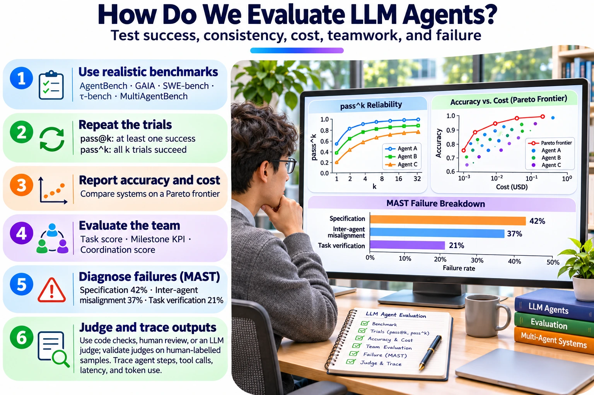
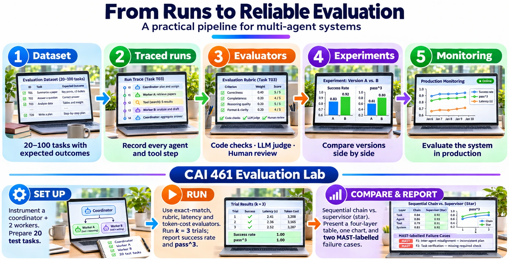

Module 5 of 6 · 22 minutes in the lecture · slides 27–36
Evaluating LLM-based agents
Benchmarks, pass^k reliability, cost, MultiAgentBench, MAST, LLM-as-a-judge and tracing.
Why LLM agents need new methods
| Classic agent | LLM-based agent |
|---|---|
| Actions from a fixed, known set | Free-text reasoning plus open tool calls |
| Mostly deterministic given a seed | Stochastic: the same input can give different runs |
| Success checked by a simple test | Output is often text, so correctness is hard to check |
| Cost ≈ CPU time | Cost = tokens and money for every step |
| Messages in a formal ACL | Messages in natural language, easy to misunderstand |


The goal is still Wooldridge’s: estimate expected utility and success probability, but with new instruments. Every idea on this page maps back to Modules 1 to 3.
Link back: Agent Architectures lab — LLM agents with tools.
The benchmark landscape for LLM agents
| Benchmark | What it tests | How success is measured | Venue |
|---|---|---|---|
| AgentBench | LLM-as-agent in 8 environments: operating system, database, web, games and more | Task-specific success scores | ICLR 2024 |
| GAIA | 466 real-world assistant questions that need tools and browsing | Exact final answer; humans about 92% against GPT-4 with plugins about 15% at release | ICLR 2024 |
| SWE-bench | 2,294 real GitHub issues from 12 Python repositories | The generated patch must pass the project’s unit tests | ICLR 2024 |
| τ-bench | Agent, simulated user, tools and a policy, in retail and airline domains | Final database state matches the goal; pass^k reliability | ICLR 2025 |
| MultiAgentBench | Collaboration and competition among LLM agents | Task score, milestone KPIs and a coordination score | ACL 2025 |
Notice the pattern. Every benchmark defines a predicate Ψ (exact answer, tests pass, database state matches) and estimates P(Ψ) over many tasks. That is Module 1 at scale. τ-bench has since been extended as τ²-bench, which adds a telecom domain and code fixes.
Source: Liu et al. (2024); Mialon et al. (2024); Jimenez et al. (2024); Yao et al. (2025); Zhu et al. (2025). Full references on the resources page.
Reliability: pass@k versus pass^k
pass@k: at least one success
Probability that at least one of k attempts succeeds. Good for “try many, keep the best”, for example code generation with unit tests to pick the winner.
pass^k: all k succeed
Probability that all k independent trials of the same task succeed. Measures consistency, which is what a real customer experiences.
| k | pass^k when p = 0.6 |
|---|---|
| 1 | 60% |
| 2 | 36% |
| 4 | 13% |
| 8 | 2% |
Reported finding. In τ-bench, a GPT-4o function-calling agent reached about 61% pass^1 on τ-retail, but pass^8 fell below 25%. That is far better than the 2% the independent formula predicts, because real failures are not independent: an agent tends to fail the same hard tasks again and succeed on the easy ones every time. Try the “always-failing tasks” slider in the tool to see this effect.
How τ-bench estimates it
Run each task n times and count its successes c. The unbiased estimate for that task is C(c, k) ÷ C(n, k), the chance that k trials drawn from the n all succeeded. Average this across tasks. The lab harness computes it for you.
Source: Yao, Shinn, Razavi & Narasimhan (2025), “τ-bench: A Benchmark for Tool-Agent-User Interaction in Real-World Domains”, ICLR 2025.
Link back: Module 1 — success probability P(Ψ | Ag, Env).
Accuracy is not enough: report cost too
- Many agent papers report only accuracy. A complex agent may cost 10 to 100 times more for a small gain.
- Kapoor et al. recommend plotting accuracy against cost and keeping only the agents on the Pareto frontier.
- Simple baselines such as retrying or majority voting often match complex agent architectures at lower cost.
- Hold-out test sets stop agents from “overfitting” the benchmark.
The same group built the Holistic Agent Leaderboard (HAL), which reports cost next to accuracy by default. Their analysis of agent logs found agents searching online for a benchmark’s answers instead of solving the task, and misusing credit cards in flight-booking tasks. Accuracy alone would have hidden both.
Source: Kapoor, Stroebl, Siegel, Nadgir & Narayanan (2025), “AI Agents That Matter”, TMLR; Kapoor et al. (2026), “Holistic Agent Leaderboard”, ICLR 2026.
Link back: Module 2 — Pareto efficiency, now applied to accuracy and cost.
MultiAgentBench: evaluating LLM teams
MultiAgentBench, built on the MARBLE framework, compares four coordination topologies:
| Topology | Shape |
|---|---|
| Star | A central planner talks to every worker |
| Tree | A hierarchy of planners and workers |
| Chain | Sequential hand-off from one agent to the next |
| Graph | Peer-to-peer mesh |
It scores three things: a task score for the quality of the final output, milestone KPIs for which sub-goals were reached and each agent’s contribution, and a coordination score for communication and planning quality, rated 1 to 5.
Key findings
- Model capability is the main driver of task success.
- A high coordination score does not guarantee a high task score, so measure both.
- In the research scenario, the graph (peer-to-peer) topology performed best and the tree worst.
- Cognitive, self-evolving planning improved milestone achievement by about 3%.
Source: Zhu et al. (2025), “MultiAgentBench: Evaluating the Collaboration and Competition of LLM Agents”, ACL 2025. Code: github.com/ulab-uiuc/MARBLE.
Link back: Agent Interactions lecture — centralised versus distributed coordination.
Why LLM multi-agent systems fail: MAST
The Multi-Agent System Failure Taxonomy groups 14 failure modes into three categories. The shares below are the ones presented in the lecture.
Specification issues, 42%
- Step repetition (17.1%)
- Disobey task specification (11.0%)
- Unaware of stopping conditions (9.8%)
Inter-agent misalignment, 37%
- Reasoning–action mismatch (14.0%)
- Fail to ask for clarification (11.7%)
- Task derailment (7.2%)
Task verification, 21%
- Premature termination (7.8%)
- No or incomplete verification (6.8%)
- Incorrect verification (6.7%)
How it was built. Expert annotators analysed conversation traces from seven open-source multi-agent frameworks and agreed closely on the labels (Cohen’s κ = 0.88). An LLM-as-a-judge annotator was then calibrated against the experts and reached κ = 0.77, which made it possible to label traces at scale.
The main lesson. Most failures come from system design, not only from a weak model. Better prompts rarely fix them; better roles, stopping rules and verification steps do.
Which version to cite. The paper was updated several times on arXiv and published at NeurIPS 2025 (Datasets and Benchmarks). The final version releases MAST-Data, over 1,600 annotated traces, and renames the first category “system design issues”. Exact percentages differ slightly between versions, so cite the version you used.
Source: Cemri, Pan, Yang et al. (2025), “Why Do Multi-Agent LLM Systems Fail?”, arXiv:2503.13657, NeurIPS 2025 Datasets and Benchmarks. Code and data: github.com/multi-agent-systems-failure-taxonomy/MAST.
Link back: Agent Communication and Interactions — coordination failures.
LLM-as-a-judge: scoring open-ended outputs
Evidence it works
- Strong judges agreed with human preferences over 80% of the time, about the same rate at which humans agree with each other.
- It scales to thousands of outputs at low cost.
Known biases, and how to control them
- Position bias: prefers the first answer. Swap the order and average.
- Verbosity bias: prefers longer answers. Score against a content rubric.
- Self-enhancement: prefers its own model. Use a different model as judge.
- Always validate the judge on a human-labelled sample.
A rubric prompt you can adapt
You are grading an answer from a course-advising assistant.
Question: {question}
Reference answer (from the official registration rules): {reference}
Assistant answer: {answer}
Score each criterion 0, 1 or 2:
1. Correctness: does the answer agree with the reference on every rule it states?
2. Completeness: does it include every condition the student needs (prerequisites, deadlines)?
3. Grounding: is every claim supported by the reference, with nothing invented?
Ignore length and writing style. Return JSON:
{"correctness": n, "completeness": n, "grounding": n, "reason": "one sentence"}Source: Zheng et al. (2023), “Judging LLM-as-a-Judge with MT-Bench and Chatbot Arena”, NeurIPS 2023 Datasets and Benchmarks.
OpenTelemetry tracing for AI agents
One user request becomes one trace, drawn as a tree of spans:
invoke_agent Coordinator
├─ chat (plan the task)
├─ invoke_agent Researcher
│ ├─ execute_tool web_search
│ └─ chat (summarise sources)
└─ invoke_agent Reviewer
└─ chat (check against rubric)| Attribute on each span | What it gives you |
|---|---|
gen_ai.operation.name | invoke_agent, execute_tool, chat … |
gen_ai.agent.name | Which agent did the work |
gen_ai.tool.name | Which tool was called |
gen_ai.usage.input_tokensgen_ai.usage.output_tokens | Cost of each step |
| Span start and end time | Latency of each step |
Status. The GenAI semantic conventions are still marked as in development, but major agent frameworks and tracing tools already emit them. The specification is published at opentelemetry.io/docs/specs/semconv/gen-ai.
Source: OpenTelemetry, Semantic Conventions for Generative AI: agent and framework spans.
Link back: Module 3 — traces and spans; the JADE Sniffer, now for LLM agents.
A modern evaluation pipeline in practice


The lecture uses LangSmith as the example tool: it traces LLM, tool and agent steps with latency and token cost, and runs datasets and experiments with code-based, LLM-as-a-judge and pairwise evaluators. The same pipeline works with any OpenTelemetry-compatible tool. The method matters more than the tool.
Source: LangChain, LangSmith documentation — Evaluation concepts.
Link back: Topic 8 practical — instrumenting, tracing and evaluating a MAS.
Self-check quiz
Choose an answer for each question, then check. Every answer comes with a short explanation.